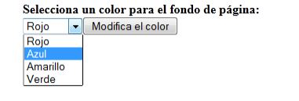

PLAN DE RECUPERACIÓN CONVOCATORIA JUNIO 2022
ACTIVIDADES DE TRABAJO UT5. INTERACCIÓN CON EL USUARIO: EVENTOS Y FORMULARIOS
CIFP La Laboral Sectores Industrial y de Servicios
Tarea 2
Realiza un ejercicio trabajando con el objeto document que permita seleccionar un color para modificar el color de la pagina
